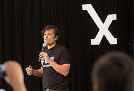

Bhargav Sri Prakash was born in Chennai, India. He is the son of architect, urban designer and Artist Sheila Sri Prakash and M. V. Sri Prakash. He was the top ranked junior Tennis player in the nation in the early 1990s. He also played in international tournaments representing India and had a career best International Tennis Federation world ranking of 761.He enrolled in theBirla Institute of Technology and Science but dropped out in his first semester and returned to Chennai because "the tennis courts on campus at BITS were tarred and the net appeared to be a hammock", as he described in an interview. He gained an undergraduate degree in Mechanical Engineering from the College of Engineering, Guindy and went on to attend graduate school on a research fellowship at the University of Michigan in Ann Arbor, where he graduated with a master's degree in Automotive Engineering.
He started his first company, CADcorporation, when he was enrolled as a graduate student at the University of Michigan to commercialise his graduate research in math-based simulations for design optimisation of automotive powertrain systems.After selling CADcorporation, he founded Vmerse in 2005, which was the first to market with a gamified 3D simulation platform for college recruiting and alumni relations.He sold Vmerse in 2009. In 2008 he started an investment fund and asset management company – Nirmana Investments – and served as a managing director, He was invited to speak at the Kellogg School of Management at Northwestern University about his plans for an investment fund focused on emerging markets in 2007.
Based on his experience with Vmerse, he was invited to serve as a Fellow of the Kauffman Foundation to analyse and build scalable technology solutions that tackle global issues, which is when he founded FriendsLearn. The United States Department of State awarded FriendsLearn a contract to develop the world's first gamified digital application to attract international students to American educational institutions based on his track-record with Vmerse.He draws inspiration for his entrepreneurial ventures from his life experiences as a professional tennis player and the value system instilled during his formative years of training as a professional athlete.
Fooya is a mobile app designed to improve awareness and behavior among children and young adults as related to nutrition and diet.
He serves on the Board of the Shilpa Foundation and has initiated impact focused initiatives in the areas of Health and Sustainability, along with Shilpa Architects's corporate social responsibility initiatives, through the Reciprocity Wave series of events organized in India.
Bhargav Sri Prakash holds three patents for inventions in Automotive Systems and in Virtual Reality Simulations.